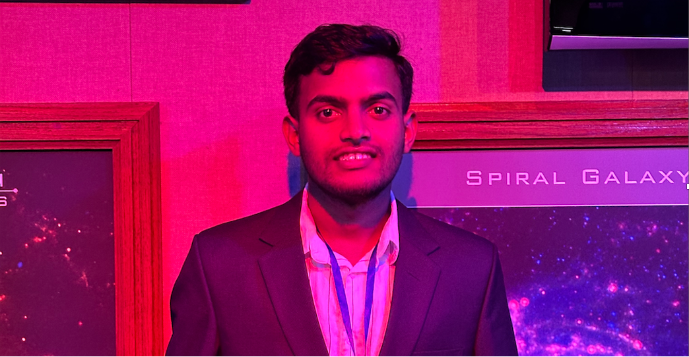
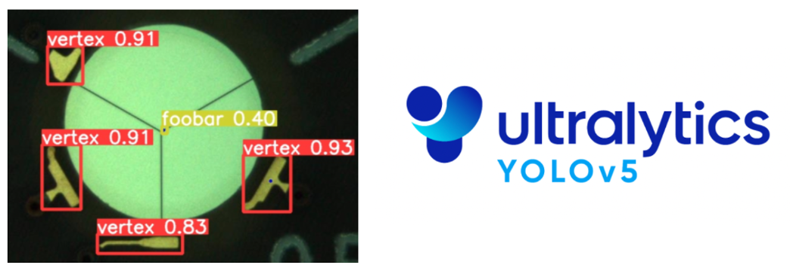
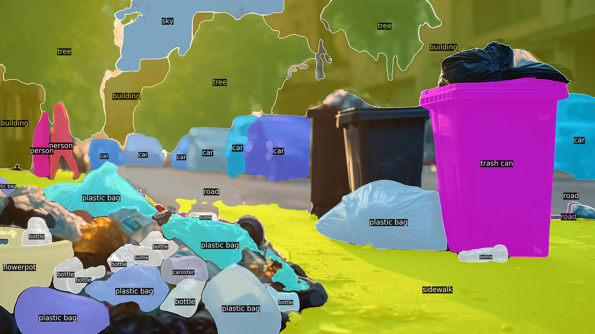
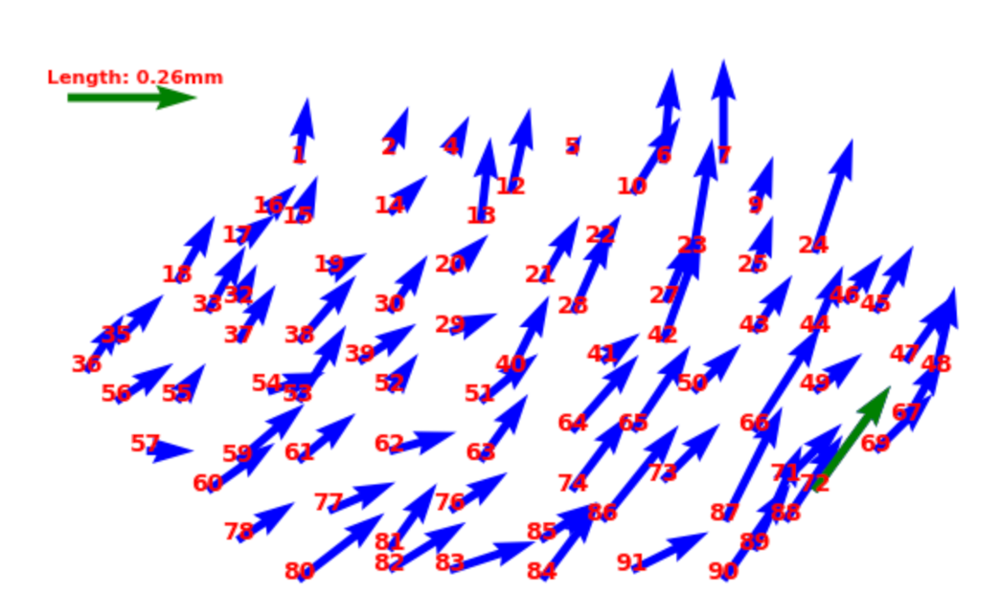
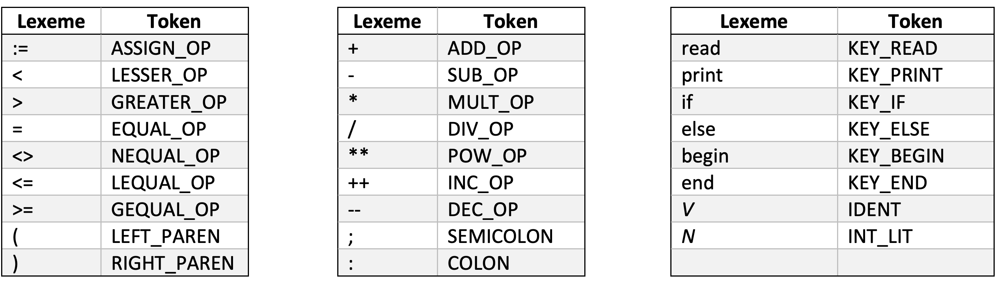
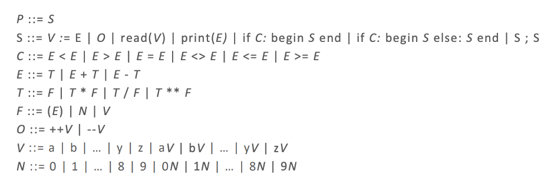

Abhinav's Portfolio

Computer Science Senior (Graduating Dec 2025) with a Minor in Mathematics | Machine Learning & Object Detection Specialist |
3 Years of Research in YOLO Algorithms, Image Processing, and AI | Proficient in Python, C/C++, Java, and Flask Web Development.

This project is a web-based interface designed to automate the detection and annotation of
scratches in sensor images using a UNET deep learning model. It allows users to upload images,
which are then processed to identify and label scratches, with results displayed and stored in organized folders for easy access. Built with Flask, the application offers real-time image analysis and user-friendly download options, supporting streamlined data handling and efficient visualization of annotated results.

This project leverages a YOLOv5 model to perform real-time object detection directly through a user-friendly web interface. Built with Flask for backend processing and HTML/CSS/JavaScript for the frontend, the application allows users to upload images, runs the detection model, and displays annotated results on the same page. The setup provides a smooth, intuitive experience for users seeking quick, efficient object detection and visualization.
This project combines a custom-built Logistic Regression model and Scikit-Learn to provide accurate predictions of red wine quality, empowering users to make informed decisions based on wine characteristics.

This project focuses on calculating the center alignment offset during wirebonding in sensor modules using advanced image processing techniques. By employing a machine learning model to detect centers and applying Hough Circle Transform, we accurately determine offsets. The resulting arrow plots visually represent alignment discrepancies, enhancing quality assurance in sensor module manufacturing and showcasing the intersection of machine learning and engineering principles

The LexiScan project serves as a foundational step into the inner workings of a compiler by implementing a lexical analyzer in C. Acting as the gatekeeper of the compilation process, the lexical analyzer reads raw source code and breaks it down into meaningful elements known as lexemes—like keywords, identifiers, operators, and literals. Each of these is matched to a predefined token, simplifying the complex and unstructured input for the next phase of the compiler. This process, called tokenization, is critical for syntax analysis and ultimately for generating executable code. Through this project, we delve into the importance of lexical analysis as the first phase of a compiler, where the source code begins its transformation from human-readable text to machine-understandable instructions. Understanding this stage offers insight into how programming languages are parsed and interpreted, building a solid foundation for exploring deeper compiler components like parsing, semantic analysis, and code generation.

ParseMaster continues the compiler journey by introducing a syntax parser that brings structure and logic to the stream of tokens produced by the lexical analyzer. Guided by Backus-Naur Form (BNF) rules, this parser determines whether the sequence of tokens forms a syntactically correct program. BNF provides a formal way to express the grammar of a programming language, defining how statements and expressions should be structured. The parser uses these rules to recursively analyze the input, identifying constructs like conditionals, loops, assignments, and expressions. This stage is crucial because it not only verifies the code's structure but also prepares the groundwork for semantic analysis and code generation. With ParseMaster, the source code evolves from flat token sequences to meaningful hierarchical representations—bringing the language to life, one rule at a time.
This project is a comprehensive collection of Verilog-based digital logic designs developed through academic labs and personal exploration, showcasing a wide range of modules from basic logic gates and arithmetic circuits to complex finite state machines (FSMs). It includes clean, modular implementations of adders, subtractors, encoders, decoders, and Moore FSMs, each verified using simulation tools like ModelSim and testbenches with waveform analysis. The FSM project features a fully documented state diagram and demonstrates control logic design with synchronous reset. Together, these projects reflect my proficiency in register-transfer level (RTL) design, hardware abstraction, and simulation-driven development using Verilog HDL.